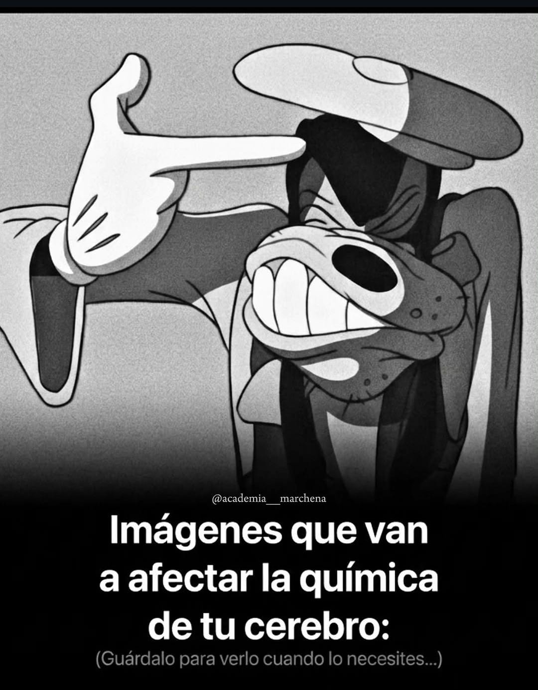

Mente Libre es un proyecto educativo de estudiantes de CECYTEM, creado como parte de nuestro Proyecto Educativo Comunitario (PEC). Te ayudamos a conocer los riesgos reales de las adicciones para que decidas con información confiable, sin juicios.
Una adicción es una dependencia física y/o psicológica hacia una sustancia o una conducta que la persona siente que ya no puede controlar, aunque le cause problemas de salud, familiares o escolares. El cerebro joven, que sigue en desarrollo hasta cerca de los 25 años, es especialmente vulnerable a sus efectos.
Es una de las sustancias más consumidas socialmente. Afecta el juicio, la coordinación y la memoria, incluso en pequeñas cantidades.
Legal pero riesgosoLa nicotina genera dependencia rápida. Los vapeadores no son "seguros": contienen químicos que también dañan los pulmones.
Legal, muy adictivoSu consumo en la adolescencia se relaciona con problemas de memoria, concentración y menor rendimiento escolar.
Riesgo moderado-altoDurante la adolescencia, cualquier sustancia tiene un impacto más fuerte y duradero en el aprendizaje y las emociones.
Mayor vulnerabilidad
Seguro has visto memes como este. Es broma, pero tiene algo de verdad detrás: tu cerebro tiene un sistema de recompensa que libera dopamina (un neurotransmisor del placer) cuando haces algo agradable, como reír con un meme o lograr una meta.
Las sustancias adictivas provocan una descarga de dopamina mucho más intensa y artificial que cualquier actividad cotidiana. Con el tiempo, el cerebro se acostumbra y necesita consumir más para sentir lo mismo, mientras las actividades normales dejan de generar satisfacción. A esto se le llama tolerancia, y es el inicio del ciclo de la adicción.
Las adicciones no solo afectan el cuerpo: también la escuela, la familia y el futuro.
| Mito | Realidad |
|---|---|
| "Probar una vez no hace daño." | El primer consumo es el que abre la puerta al hábito; el riesgo depende de la sustancia, la edad y la frecuencia. |
| "Puedo dejarlo cuando quiera." | La dependencia cambia la química cerebral; dejarlo suele requerir apoyo profesional y de la familia. |
| "Vapear es inofensivo, es solo vapor." | Los vapeadores contienen nicotina y otros químicos que también afectan la salud pulmonar y generan adicción. |
| "Si mis amigos lo hacen, a mí no me pasará nada." | Cada organismo reacciona distinto; el riesgo de dependencia es real para cualquier persona. |
Un resumen visual de este proyecto sobre prevención de adicciones.
Responde y descubre qué tan informado/a estás. Verás la respuesta correcta al instante.
Tus respuestas se guardan solo en este dispositivo (navegador) para mostrar los resultados en vivo, ya que este es un proyecto escolar sin servidor propio. No pedimos tu nombre.
Gratuita, confidencial y disponible 24/7 para orientación y crisis.
800-911-2000Institución pública especializada en prevención y tratamiento de adicciones para jóvenes.
Busca la unidad más cercanaUn familiar, maestro u orientador escolar puede ser el primer paso.
Pedir ayuda es valienteEn caso de intoxicación o urgencia médica grave, llama de inmediato.
911Este sitio forma parte de un Proyecto Educativo Comunitario (PEC) de CECYTEM.
Objetivo del PEC: este sitio busca prevenir el consumo de sustancias adictivas entre adolescentes, informando sobre sus riesgos reales con datos confiables y un lenguaje cercano, sin juzgar a nadie.
Buscamos generar conciencia comunitaria y fomentar la participación: te invitamos a responder el quiz y la encuesta, ver el video y compartir el sitio con tus compañeros, porque la prevención funciona mejor cuando se comparte.
Identidad visual, paleta de colores y diagramación de las secciones.
Estructura HTML, estilos CSS y funcionalidad en JavaScript.
Investigación, redacción de textos preventivos y curaduría de recursos.
Revisión conjunta de navegación, formularios y diseño responsive.
| Semana | Actividad | Estado |
|---|---|---|
| Semana 1 | Investigación y recopilación de información confiable | Completado |
| Semana 2 | Diseño de estructura y paleta de colores | Completado |
| Semana 3 | Programación en HTML, CSS y JavaScript | Completado |
| Semana 4 | Pruebas de navegación, formularios y diseño responsive | Completado |
| Semana 5 | Ajustes finales y entrega del proyecto | Completado |
Escríbenos tus dudas sobre el proyecto o comparte información con nosotros.
Este formulario es parte de un proyecto escolar y nadie lo monitorea en tiempo real. Si tú o alguien más está en una situación urgente, comunícate directamente a Línea de la Vida: 800-911-2000 (gratuita, 24/7) o acude con el orientador escolar.
Si tienes dudas sobre el proyecto o quieres compartir información confiable con nosotros, este es el lugar.